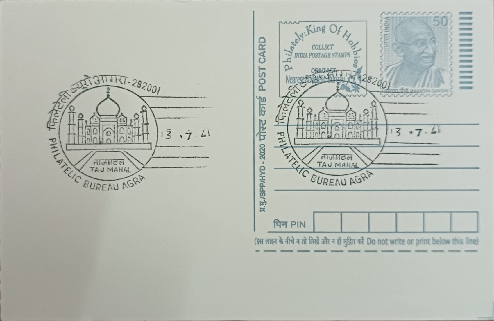

Taj Mahal
ताज महल


The name Taj Mahal is a shortened form of "Mumtaz Mahal," meaning Chosen One of the Palace, the title given to Arjumand Banu Begum, the favored wife of Mughal emperor Shah Jahan. She died in 1631 while giving birth to their fourteenth child during a military campaign in Burhanpur, and her grief-stricken husband resolved to build her a mausoleum of unmatched splendor on the banks of the Yamuna at Agra. Her remains were brought to the city and interred there once construction began the following year, giving the monument its founding purpose as an act of personal mourning translated into architecture rather than a temple or fort built for strategic or devotional reasons.
As a mausoleum, the Taj Mahal occupies a distinct category among India's monuments, standing as the centerpiece of a larger funerary complex that also includes a mosque, a guest house, and formal charbagh gardens divided by reflecting pools. Its significance rests on both religious and art-historical grounds, since it fuses Persian, Central Asian Timurid, and indigenous Indian building traditions into a single idiom that later Mughal architecture rarely surpassed. UNESCO inscribed the complex as a World Heritage Site in 1983, citing it as the jewel of Muslim art in India, and in 2007 a global public poll named it among the New7Wonders of the World, cementing its status as the most recognized built monument associated with the Mughal era.
Construction began around 1632 under a board of architects whose chief designer is generally identified, based on a seventeenth-century manuscript called the Diwan-i-Muhandis, as Ustad Ahmad Lahauri, a Persian-trained engineer from Lahore. An estimated 20,000 artisans, masons, and laborers worked on the project, drawing white marble from Makrana in Rajasthan and semi-precious stones such as jade, lapis lazuli, and turquoise sourced from as far as Central Asia and Sri Lanka for the pietra dura inlay work. The main mausoleum rises to roughly 73 metres including its finial, sits on a marble plinth above a red sandstone base, and is flanked by four minarets built slightly tilted outward from the platform, a deliberate measure so that in the event of an earthquake they would fall away from, rather than onto, the central tomb.
A distinguishing feature of the complex is the pair of red sandstone buildings flanking the mausoleum on its east and west sides, a mosque and an identical structure known as the jawab, or answer, built chiefly to preserve the garden's symmetry since it cannot itself be used for prayer, facing away from Mecca. Inside the central chamber lie the cenotaphs of Mumtaz Mahal and, asymmetrically, Shah Jahan, whose own tomb was added after his death in 1666 following his imprisonment by his son Aurangzeb in nearby Agra Fort, from where he is said to have spent his final years gazing at the monument across the river. The actual sarcophagi lie in a quieter crypt directly below this ornamented chamber, following Mughal funerary custom of keeping the true burial space unadorned and separate from the ceremonial hall above.
Today the Taj Mahal and its grounds are maintained by the Archaeological Survey of India, which has applied Multani mitti, or fuller's earth, mud-pack treatments to the marble periodically since 1994, including rounds in 2001-02, 2008-09, 2012, and 2014, to lift yellow staining caused by vehicular and industrial pollution in and around Agra. Entry is now tightly regulated, with visitor caps, restricted night viewing confined to a few days around the full moon, and a buffer zone enforced under the Taj Trapezium Zone pollution-control programme that limits emissions from nearby industries. The monument draws several million visitors a year, making it both the anchor of Agra's tourism economy and the subject of continuous, government-led conservation work aimed at slowing the marble's gradual discoloration rather than reversing it outright.
| Date of Introduction | June 3, 1981 |
|---|---|
| Address | Incharge, |
| Philatelic Bureau, Agra HO-PB, | |
| Agra (dt.), Uttar Pradesh - 282001. |